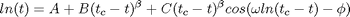
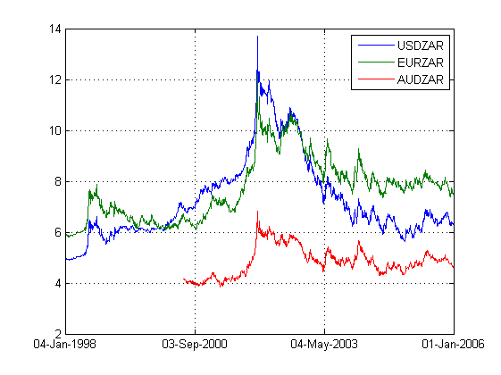
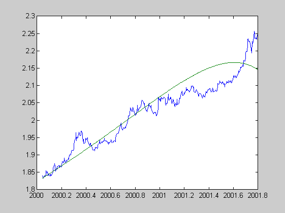
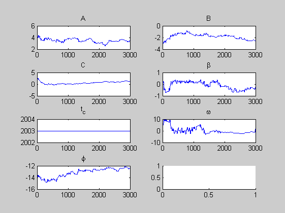

Script File to estimate log-periodic fit to USDZAR rand crash using MCMC
Data is USD/ZAR over 15000 days starting in 1960
Algorithm implemented in MCMC.M :
1. Choose initial point in parameter space
2. Generate parameter jump from jump-pdf
3. Accept/reject jump - always accept better likelihoods
reject with uniform probability
4. Check burn-in and convergence/mixingFunction is:

From Sornette and Johansen, Quantitative Finance, 1, 452, 2001
Fitting Parameters are: (A, B, C, beta, t_c, w, phi)
dates are given in days since AD began but converted to approximate years using 365.25 d/yr
Bruce Bassett, Tim Gebbie
Contents
Clear the workspace
clear all;
clc;
Set initial conditions for parameter chain vector p
(A,B,C,BETA,TC,OMEGA,PHI)
para_str ={'A','B','C','\beta','t_c','\omega','\phi'};
epoch = '31-Jan-2000::31-Oct-2001';
p0 = [3.5,-3,2.27,0.35,2003,7,-14]; % initial parameters
pu = [1,1,1,1,0,10,1]; % random weightings
Load the data
load data/workspace_zar.mat; % load file
Prepare the data
plot(ZAR); data = fts2mat(ZAR(epoch).USDZAR,1); ytilde = log(data(:,2)); % column data of ln(ZAR/USD) exchange rate (including NAN missing data) t = data(:,1)./ 365.25; % dates for the data (days since AD began) convert days to years chain_length = 3000;
Estimate the parameters
[chains,chi2]=mcmc(@logp,t,ytilde,p0,pu,chain_length);
Find the best theory
define theoretical prediction
best_theory = logp(t,chains(end,:));
Plot the best theory
figure;
plot(t, ytilde, t, best_theory);
% Check mixing/convergence using R-statistic (Verde et al)
 Plot the chains
figure; for i=1:length(chains), subplot(4,2,i); plot(chains(:,i)); title(para_str{i}); end; figure for i=1:length(chains), subplot(4,2,i); hist(chains(:,i),40); title(para_str{i}); end;
Error using ==> evalin Index exceeds matrix dimensions.